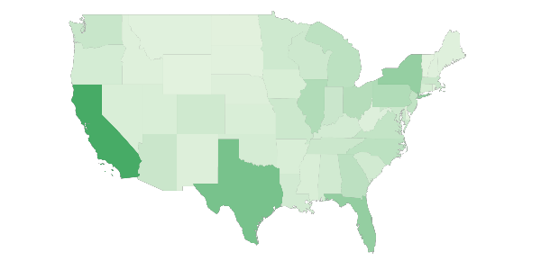
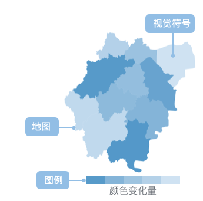

分级统计图
分级统计图的简介

分级统计图是一种在地图分区上使用视觉符号（通常是颜色、阴影或者不同疏密的晕线）来表示一个范围值的分布情况的地图。在整个制图区域的若干个小的区划单元内（行政区划或者其他区划单位），根据各分区的数量（相对）指标进行分级，并用相应色级或不同疏密的晕线，反映各区现象的集中程度或发展水平的分布差别，最常见于选举和人口普查数据的可视化，这些数据以省、市登地理区域为单位。
此法因常用色级表示，所以也叫色级统计图法。地图上每个分区的数量使用不同的色级表示，较典型的方法有：（1）一个颜色到另一个颜色混合渐变；（2）单一的色调渐变；（3）透明到不透明；（4）明到暗；（5）用一个完整的色谱变化。Choropleth 地图依靠颜色等来表现数据内在的模式，因此选择合适的颜色非常重要，当数据的值域大或者数据的类型多样时，选择合适的颜色映射相当有挑战性。
Choropleth 地图最大的问题在于数据分布和地理区域大小的不对称。通常大量数据集中于人口密集的区域，而人口稀疏的地区却占有大多数的屏幕空间，用大量的屏幕空间来表示小部分数据的做法对空间的利用非常不经济，这种不对称还常常会造成用户对数据的错误理解，不能很好地帮助用户准确得区分和比较地图上各个分区的数据值。
英文名：Choropleth Map
分级统计图的构成

| 图表类型 |
分级统计图 |
| 适合的数据 |
一个分类字段，一个连续字段 |
| 功能 |
对比分类数据的数值大小
|
| 数据与图形的映射 |
一个分类字段映射到地图的地理位置另一个连续字段映射到颜色
|
| 适合的数据条数 |
根据实际地理位置信息，暂无限制 |
分级统计图的应用场景
适合的场景
例子1： 2014 年美国各个州的人口情况（数据来源于 United States Census Bureau）。 分级统计图较多的是反映呈面状但属分散分布的现象，如反映人口密度、某农作物播种面积的比、人均收入等。本例子中，通过颜色的深浅反映了人口的主要分布情况，并且能很明显看出 California、Texas 两大州人口最多，然而对于面积较小的区块，因为人口数量也少，所以渲染的颜色也浅，就导致了这一区块在图上就很难被看见，这也是 Choropleth map 的缺点。
$.getJSON('/data.json?filename=USA.geo', function(mapData) {
$.getJSON('/data.json?filename=2014-usa-population', function(data) {
var Stat = G2.Stat;
var chart = new G2.Chart({
id: 'c1',
width: 800,
height: 500,
plotCfg: {
margin: [0,0,20,0]
}
});
chart.source(data);
chart.legendVisible('Population', false);
var gmap = new G2.Plugin.GMap({
chart: chart,
mapData: mapData,
style: {
stroke: '#999',
fill: '#e6e6e6'
}
}).draw();
chart.polygon().position(Stat.map.region('State', mapData)).color('Population','#e5f5e0-#31a354');
chart.point().position(Stat.map.center('State', mapData)).size(0).label('code', {offset: 0});
chart.render();
});
});
例子2：2015 年全球人口性别比例分布。 下图显示了 2015 年全球男女比例的总体情况，其中数值表示的是每 100 位女性对应的男性数量。可以看出在欧美国家，普遍是女性略多于男性，在前苏联地区，这种现象却尤为突出，而中东地区却是男多女少。
$.getJSON('/data.json?filename=world.geo', function(mapData) {
var Stat = G2.Stat;
var Frame = G2.Frame;
var userData = [
{name: 'Russia',value: 86.8},
{name: 'China',value: 106.3},
{name: 'Japan',value: 94.7},
{name: 'Mongolia',value: 98},
{name: 'Canada',value: 98.4},
{name: 'United Kingdom',value: 97.2},
{name: 'United States of America',value: 98.3},
{name: 'Brazil',value: 96.7},
{name: 'Argentina',value: 95.8},
{name: 'Algeria',value: 101.3},
{name: 'France',value: 94.8},
{name: 'Germany',value: 96.6},
{name: 'Ukraine',value: 86.3},
{name: 'Egypt',value: 102.1},
{name: 'South Africa',value: 101.3},
{name: 'India',value: 107.6},
{name: 'Australia',value: 99.9},
{name: 'Saudi Arabia',value:130.1},
{name: 'Afghanistan',value: 106.5},
{name: 'Kazakhstan',value:93.4},
{name: 'Indonesia',value: 101.4}
];
var frame = new Frame(userData);
frame.addCol('trend', function(obj) {
return (obj.value > 100) ? 1 : 0;
});
var chart = new G2.Chart({
id: 'c2',
width: 800,
height: 400,
plotCfg: {
margin: [0,0,60,80]
}
});
chart.legend('left');
chart.source(frame);
chart.col('trend',{
type: 'cat',
alias: '每100位女性对应的男性数量',
values: ['女性更多', '男性更多']
});
chart.tooltip({
map:{
name: 'trend',
value: 'value'
}
});
var gmap = new G2.Plugin.GMap({
chart: chart,
mapData: mapData,
style: {
stroke: '#999',
fill: '#fff'
}
}).draw();
chart.polygon().position(Stat.map.region('name*value', mapData)).color('trend',['#C45A5A','#14647D']).opacity('value');
chart.render();
});
不适合的场景
例子1： 2008 年美国总统大选结果。 民主党候选人奥巴马和共和党候选人麦凯恩胜出的州分别用蓝色和红色表示。这个例子的选举可视化很容易给用户造成简介中提到的错觉：数据分布和地理区域大小的不对称。共和党比民主党获得了更多的投票，因为红色的区域所占的面积更大。但是在美国总统大选中，最后的结果是看候选人获得的选举人票数，每个州拥有的选举人票数是不一样的，在一个州获胜的选举人将得到该州所有的选举人票数。纽约州虽然面积很小，却拥有33张选举人票，而蒙大拿州虽然面积很大，却只有3票。
这个时候推荐使用点描法地图。
$.getJSON('/data.json?filename=USA.geo', function(mapData) {
$.getJSON('/data.json?filename=2008-usa-president', function(data) {
G2.Global.shape.polygon = {
'stroke-width': 0
}
var Stat = G2.Stat;
var chart1 = new G2.Chart({
id: 'c3',
width: 800,
height: 450,
plotCfg: {
margin: [0,80,0,0]
}
});
var Frame = G2.Frame;
var frame = new Frame(data);
frame.addCol('候选人', function(obj) {
return obj['Obama'] > obj['McCain'] ? 1 : 0;
});
chart1.source(frame);
chart1.col('候选人', {
type: 'cat',
values: [ 'McCain', 'Obama']
});
var gmap = new G2.Plugin.GMap({
chart: chart1,
mapData: mapData,
style: {
stroke: '#fff',
fill: '#e6e6e6',
'stroke-width': 3
}
}).draw();
chart1.tooltip(false);
chart1.polygon().position(Stat.map.region('State', mapData)).color('候选人',['#F07763', '#698DC5']);
chart1.point().position(Stat.map.center('State', mapData)).label('Num', {offset: 0, label: {'fill': '#fff', 'font-size': '16'}}).size(0);
chart1.render();
});
});
标签
实现
G2